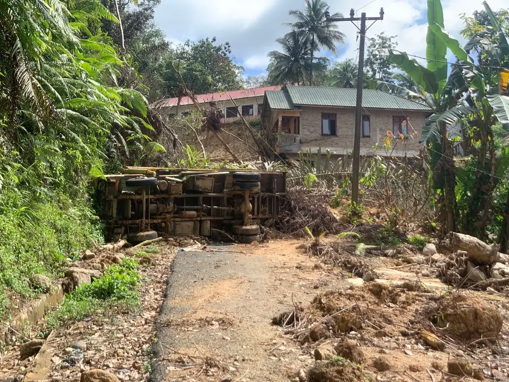
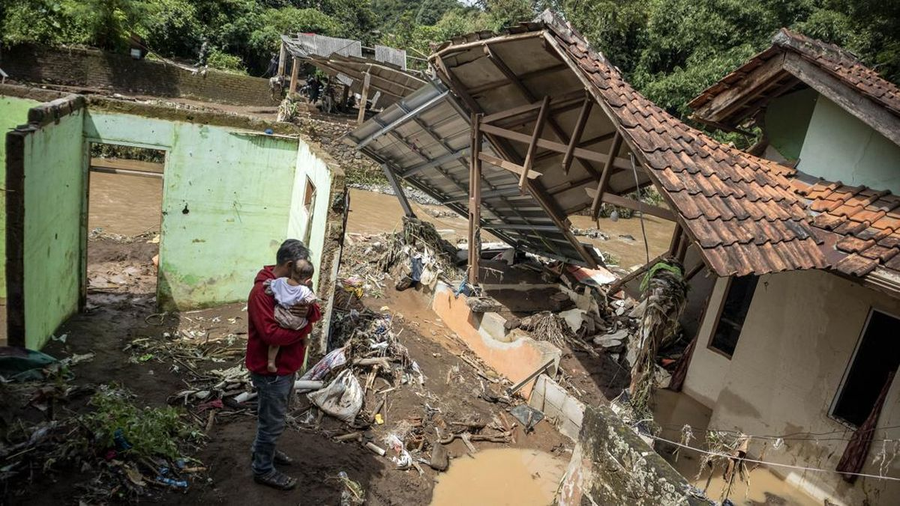
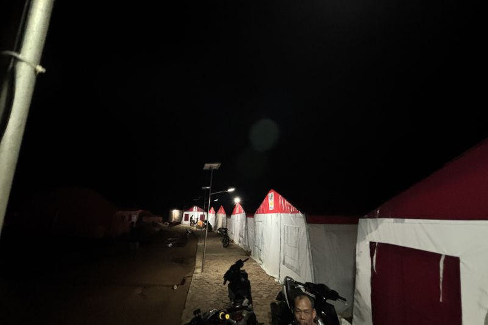
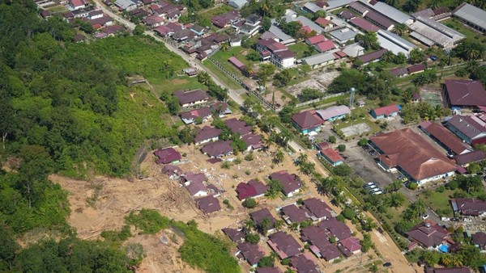

Bencana Pulau
Sumatera:
Tapanuli
Tengah
Tentang TAPTENG • Tentang TapTeng
Kab. Tapanuli Tengah
Deskripsi Wilayah
Kabupaten Tapanuli Tengah merupakan salah satu wilayah di Provinsi Sumatera Utara yang memiliki potensi bencana alam seperti banjir, longsor, dan gempa bumi.
Informasi ini disajikan untuk mendukung pemetaan risiko bencana serta perencanaan mitigasi yang lebih baik.
Bencana Sumatera – November 2025




Pada bulan November 2025, wilayah Sumatera mengalami rangkaian bencana alam yang signifikan, meliputi banjir bandang, longsor, serta kerusakan infrastruktur di beberapa daerah pesisir dan perbukitan.
Curah hujan ekstrem yang berlangsung dalam durasi panjang serta kondisi geografis wilayah memperparah dampak bencana. Hal ini menegaskan pentingnya perencanaan mitigasi, kesiapsiagaan masyarakat, serta penanganan terpadu untuk mengurangi risiko bencana di masa mendatang.